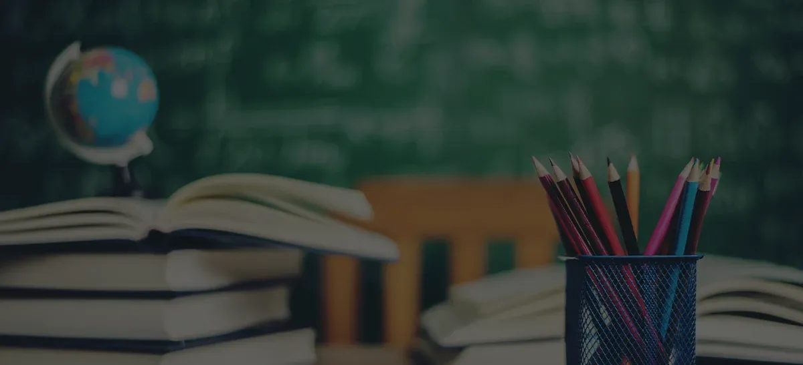
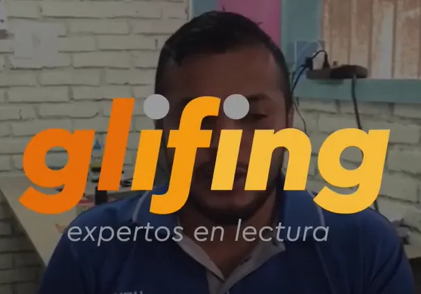
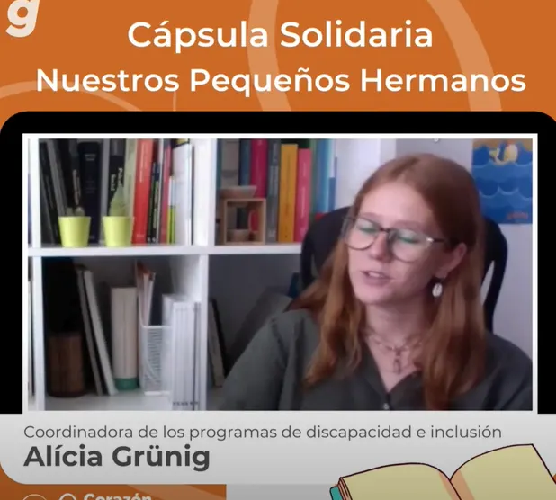
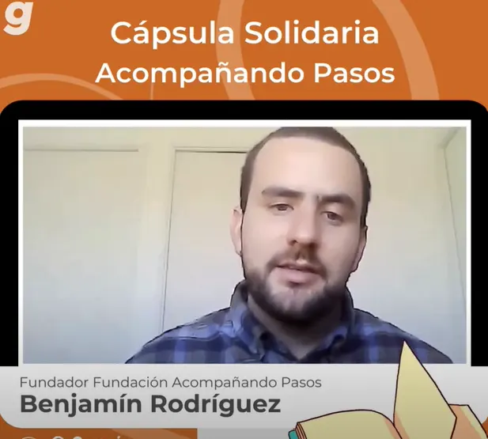

Becas para familias
Disponemos de fondos económicos que destinamos a cubrir, total o parcialmente, las terapias de reeducación que puedan necesitar algunos niños de familias con dificultades económicas.
Pedir una beca
En Avesedari creemos firmemente que todas las personas tienen derecho a aprender a leer con autonomía y confianza, independientemente de su situación económica. Por eso, ofrecemos becas para acceder al entrenamiento lector Glifing a familias y entidades que lo necesiten, pero no puedan asumir el coste.
Si conoces niños, adolescentes o adultos en situación de multivulnerabilidad que se podrían beneficiar de este apoyo, ponte en contacto con nosotros. Estudiaremos cada caso de manera personalizada para valorar la viabilidad y encontrar la mejor manera de acompañarlos en su camino lector.
Recuerda que para pedir una beca debes ser socio de Avesedari.
Hazte socio/a (60 €/año)PENDIENTE D-02: requisito y destino. Hoy va a lectura.glifing.com.

Disponemos de fondos económicos que destinamos a cubrir, total o parcialmente, las terapias de reeducación que puedan necesitar algunos niños de familias con dificultades económicas.
Pedir una becaAtendemos a las familias con casos de dificultades de aprendizaje de la lectura tanto para realizar su diagnóstico como para aplicar una intervención adecuada.
Este servicio está destinado a las familias que no tienen recursos económicos suficientes para conseguir un diagnóstico e intervención en un centro privado. En nuestras intervenciones, y siempre que sea adecuado, utilizamos el Método Glifing de entrenamiento de la lectura, mediante las Becas Avesedari.
Si formas parte de un gabinete y quieres pedir una beca para ayudar a una familia, rellena el formulario y ¡entra en acción!
Pedir una becaColaboramos, becamos y compartimos ayudas con entidades sin ánimo de lucro que atienden a niños vulnerables con necesidades educativas especiales en cuanto al acceso a los aprendizajes a través de la lectura.
Pedir una becaHoy están con nosotros:



Contacta con nosotros a través de este formulario y ¡entra en acción!
PENDIENTE D-02: publicar solo si es el formulario oficial.